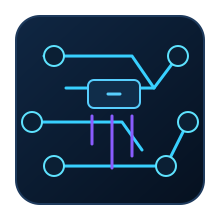

Information Security Intern
- Orchestrated trusted-IP lifecycle across 6+ Azure tenants through XSOAR, GitHub, and Terraform, eliminating configuration drift.
- Shipped Splunk-to-XSOAR containment that enforces Cloudflare and EDL blocks in under a minute.
- Implemented progressive 15-day and 30-day block policies with recurrence tracking to standardize threat decisions.
- Built 15+ Python utilities and 5+ SOAR playbooks, saving roughly 200 hours of manual effort each year.
- Automated SSL certificate renewals on F5 BIG-IP via AppViewX, preventing ~200 hours of repetitive work annually.